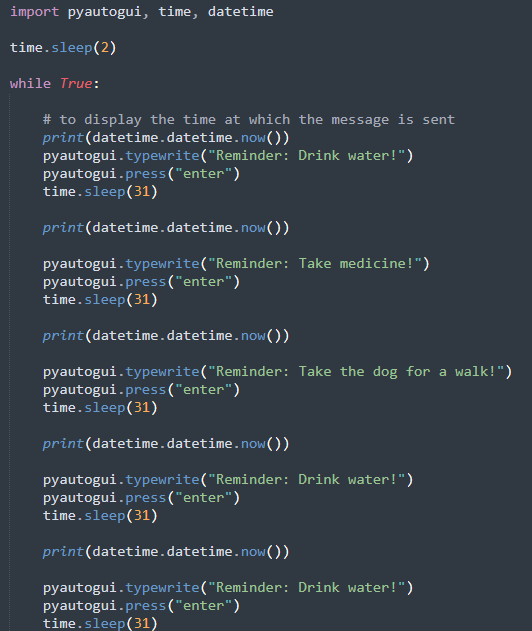
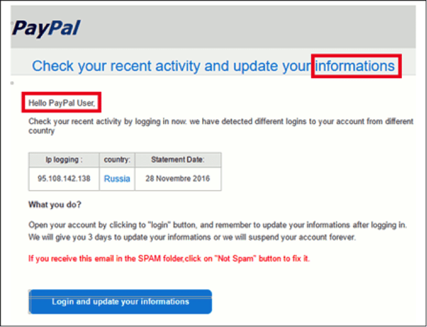
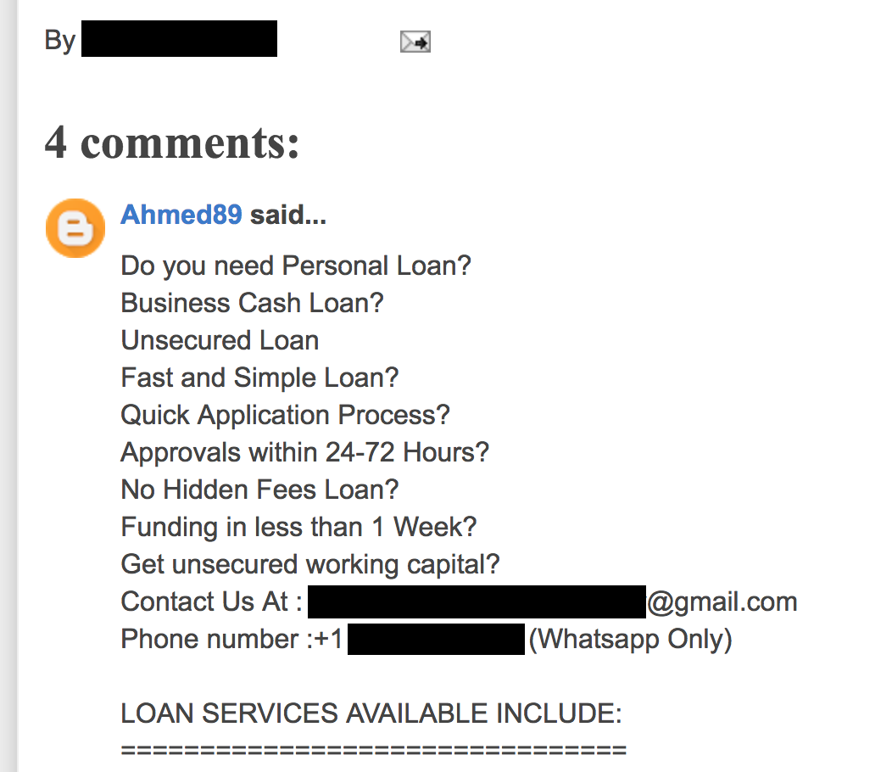
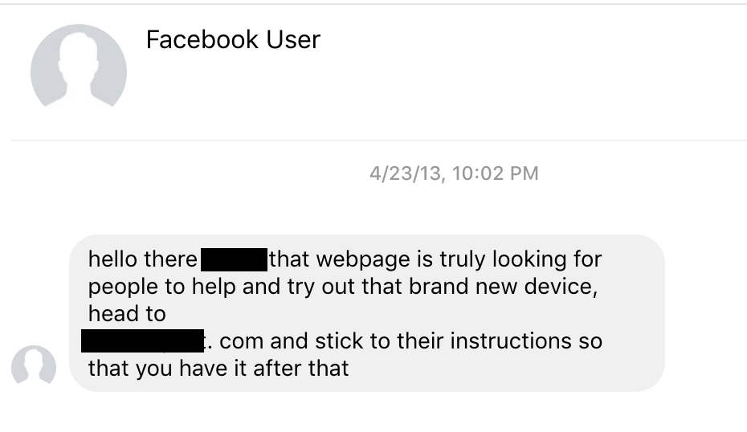
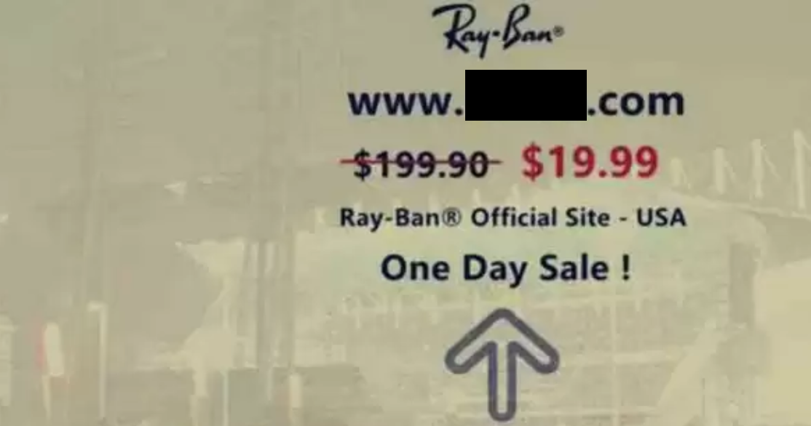
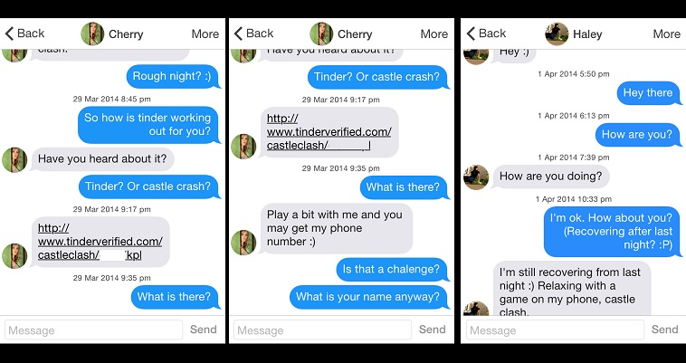
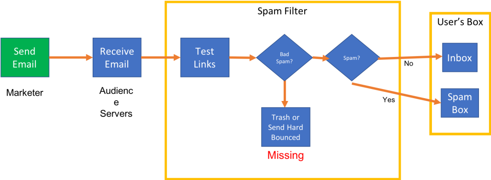
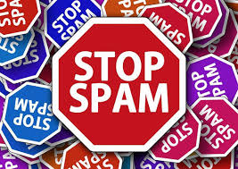

A spam bot is a computer program that helps to spread spam across the Internet. Spam bots often scrape contact information, create fake user accounts, or operate stolen social media accounts.
Spam Message
fake user accounts
stolen social media accounts
scrape contact information
What is a spam bot?
Speaking generally, bots are computer programs that execute repetitive tasks, and they usually operate over the Internet. A spam bot is a specific type of bot that sends (or helps with sending) spam messages. A spam bot may also post spam in various places where users interact online, such as social media platforms or forums.
Spam is any inappropriate or unwelcome message that's pushed out to a large number of users. Usually, spam involves unwanted product advertisements, irrelevant backlinks (to attempt to get the linked website higher in search engine results), or more sinister things like scams or malware downloads. Spam can also be any content that's irrelevant and delivered in large volumes.
Like the robocalls that have plagued many consumers in recent years, most online spam is fully automated by spam bots. Users are not interacting with a real person when they encounter a spam bot's handiwork, even if the bot appears to "respond" to user interactions. Instead, spam bots spread preprogrammed messages or follow preprogrammed conversational scripts to interact with users.
Spambots operates
Spam bots can create fake accounts on forums, social media platforms, messaging apps, or email hosting providers. Sometimes they'll try to disguise their activities as coming from a real user. Since creating a user account often only involves filling out a few fields (name, email address, etc.), attackers will program spam bots to fill out these forms automatically - a relatively simple task for a skilled programmer. Some platforms offer CAPTCHAs or similar challenges to prevent bots from creating accounts, but these defenses are not foolproof.
Once spam bots have an account or otherwise have access to a platform, they will start pushing out spam messages according to a predetermined (by the bot creator) set of rules.
Other kinds of spam bots may assist spammers without actually sending the spam messages. Some spam bots harvest email addresses or phone numbers to provide targets for spammers - they scan the web, scrape contact information, and save it to a database.

How are bots used for email spam?
Senders of email spam need as many working email addresses as they can find. Email address harvesting is carried out by bots that scan webpages, look for text that follows the email address format (text + @ symbol + domain), and copy that text into the spammer's database of targets.
Once the spammers have a database of email addresses, they can then blast out spam emails. Often spam emails are criminal in nature, attempting to spread malware or steal account credentials via phishing. Spammers may use a technique called email spoofing to make it appear like their emails come from a legitimate source.
Spammers don't always use bots for collecting email addresses - they can obtain email lists from a variety of other places. They can purchase lists (often on the Dark Web), they can steal a company's legitimately obtained database, or they can trick users into giving them their email address.

What is comment spam?
Comment spam is any spam that appears in the user-generated comments section of a website. Some spam bots look for and post in comments sections that don't require a user account for participation in a thread. This is easier if the forum does not have sufficient verification for checking if a commenter is a human user, but some bots can get past those protections even if they're present.
Other times, bots will create fake user accounts and leave comments - and if one account gets shut down, they create another one. In this way, spammers can automate the process of promoting and publishing spam.

How do spam bots operate on social media?
Many bots are active on social media platforms such as Facebook, Twitter, or Instagram. Social media spam bots will send out messages or create posts promising free items, deals on consumer products, adult content, or other too-good-to-be-true offers. They might also like, share, or retweet spam posts, or leave spam comments in comment threads below unrelated social posts.
Social spam bots can operate via fake accounts, or via compromised real user accounts (the accounts may have been compromised through credential stuffing). To make a fake social media bot account appear more legitimate, a spam bot may copy a legitimate user's profile picture.
 Spam bots can also operate on a variety of messaging or chat apps (like Kik, Skype, Telegram, etc.). As is the case in other online channels, these spam bots attempt to trick users into paying money, giving up information, or clicking an unsafe link. Often these bots are rudimentary chatbots programmed to "converse" with any users who respond to their messages, with the aim of engaging the user enough to get them to click on a link or surrender personal data.

How can users tell if a message is from a spam bot or a real person?
Spam bots are sometimes programmed to try to look like real users, but typically they aren't sophisticated enough for the disguise to be convincing. Here are a few quick ways to tell if a post or message is from a spam bot:
- Excessive spelling or grammar mistakes
-
Many, but not all, preprogrammed spam bot messages will contain a large amount of spelling and grammar errors, often to the point that it is difficult to fully decipher the meaning of the message.
- If it sounds too good to be true…
-
Then it probably isn't true. Messages offering incredible deals on consumer products, medications, services, or other typically expensive purchases are often from spam bots.
- Urgent, aggressive directions to click on a link or forward a message
-
Often, spam bots are programmed to try to get users to take a specific action as quickly as possible (just like in a phishing attack). If a social media profile is compromised, this may result in that person's profile acting strangely - for instance, sending aggressive messages demanding that their social contacts do something, when the person has not been known to behave in that way in the past.
- Messages from unexpected sources
-
Unexpected emails or social messages from unknown persons should be treated with suspicion. In addition, if a user's social account is stolen, the spam bot may use it to reach out to people that the user doesn't normally contact.
- Irrelevance
-
In the above screenshot of a spam comment, the commenter listed a number of different types of loans, including "Personal Loan" and "Business Cash Loan." This comment appeared below a blog post about cybersecurity. Spam bots often won't check if their comments are relevant to the thread - they just automatically post them.
- The other party's responses in the conversation stop making sense
-
Spam chatbots will often follow a relatively simple conversational script, and if a user's responses deviate from expected responses, the spam chatbot may keep following the script even when the scripted replies no longer make sense in context.

How can companies prevent spam bots from creating a bad user experience?
Spam bots don't behave like real users, and a bot management solution should be able to tell the difference between spam bot activities and legitimate interactions with a web property.
